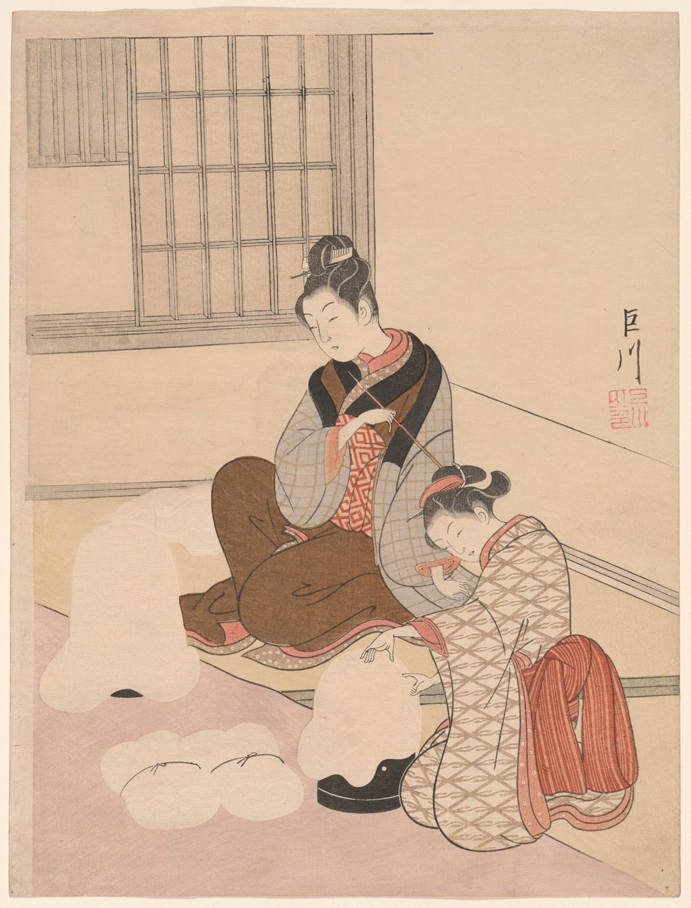

References / Illustration / 461
Harunobu, Evening Snow on a Floss Shaper
Two women stretch silk floss in a quiet room, a visual pun on a snowy mountain, in Suzuki Harunobu’s Eight Views of the Parlor, one of the first sets of full-color prints.
- Source
- Art Institute of Chicago, 1928.903
- Creator
- Suzuki Harunobu
- Made
- c. 1766
- Style
- Ukiyo-e (agent-proposed, not yet reviewed by a person)
- Moods
- Calm, delicate, witty
- Evidence
- Downloaded and inspected the Art Institute of Chicago image of impression 1928.903 (1686 × 2214 px).
- Reviewed
- Rights
- Open license, stored. License: CC0-1.0. Rights policy
Context
AIC catalogues the sheet as a color woodblock print, chūban, 28.7 × 21.6 cm, about 1766, from the series Eight Views of the Parlor. AIC 1928.903.
AIC says that the series appeared around the time full-color prints emerged, that the floss stands for snow and the floss shaper for the mountain, and that this sheet carries the handwritten signature of the patron Kyosen (Ōkubo Tadanobu), not Harunobu’s. AIC.
Observed
- A lattice window at upper left and the edges of the floor and wall run as long diagonals across a plain cream ground.
- Two women in patterned robes sit to the right of center. One robe has a gray check, another a beige lattice, and an under-robe a red key pattern.
- The lines are thin, even, and black. Faces and hands are unprinted paper.
- Colors are soft and flat: pale pink floor, brown, gray, salmon red, and black.
- White floss mounds at lower left are left almost unprinted, with only faint contour lines.
- A two-character signature and a red square seal sit in the empty area at right.
Why it belongs
Harunobu’s prints show the style before Prussian blue: the same outlines, flat areas, and empty grounds, with a softer palette of pinks and grays.
Pattern is confined to garments, and the large empty wall is part of the composition.
Borrow
Leave large areas plain and let thin diagonal lines divide the space.
Put small all-over patterns inside clothing-like shapes, and keep each pattern to one area.
Measured
Machine-extracted by tools/image-traits.py on . Full measurement.
- Mean chroma
- 0.21
- Palette
- #d7b3a0 36%
- #e7ccb3 34%
- #c5ac95 9%
- #866249 5%
- #faebd8 5%
- #b29a84 4%
- #a58d78 2%
- #bc715a 2%



is_public_domain: true) and releases images of public-domain works under CC0. AIC open access. Harunobu died in 1770, so the work is public domain in Japan and the United States. License: CC0-1.0. Open the image for full size.